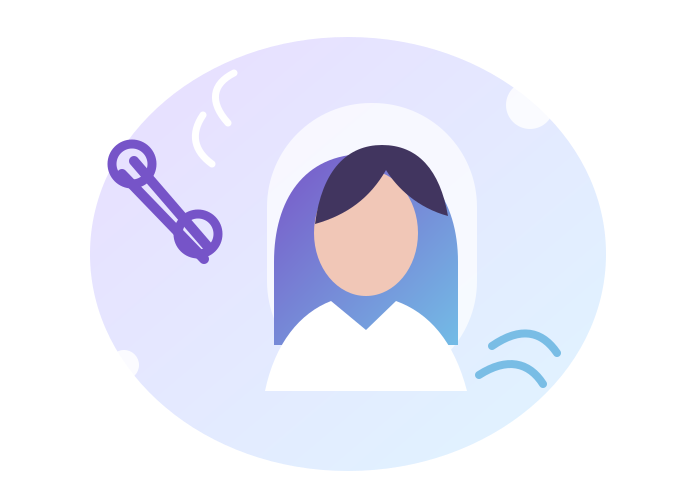

精選設計師
以專業與傾聽為起點，理解你期待的改變。
A COLORFUL MOMENT, JUST FOR YOU
在陌生的體驗裡，找到合適的自己。

留一點時間ABOUT THE BRAND
紫藍的顏相信，髮型不只是外表的整理，也是一段重新感受自己的小旅程。我們以細心溝通與合適的設計，陪你找到自在、喜歡的樣子。
看看品牌故事OUR PROMISE
從理解你的想法開始，打造適合自己的造型體驗。
以專業與傾聽為起點，理解你期待的改變。
依照個人風格與需求，細心討論合適方向。
尊重每個人的獨特，讓造型呈現真實的自己。
YOUR NEXT CHAPTER